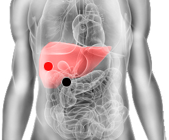

Enterobius vermicularis, Oxiuros
Par
píloro - hígado

Generalidades:
Parásito nematodo (gusano redondo) también conocido como Oxiuro. Síndrome de niño triste, con asco y sin fuerza, prurito (comezón, irritación) anal. Desquicia la digestión, puede dar apendicitis. Buscar la bacteria asociada. También pueden haber otros parásitos como lombrices. Checar par Glúteo- Glúteo
Transmisión
El enterobius prolifera en el tubo digestivo, no resiste el contacto con el aire. Se contrae por falta de higiene, por comerse las uñas. Tocar la zona anal y luego llevarse las manos a la boca. En las niñas puede afectar los órganos sexuales si se realiza la higiene del ano hacia la zona genital, por lo mismo es más común en infantes. Se recomienda revisar a toda la familia . El parásito es muy fragil pero sus huevecillos son más resistientes. Se deben lavar muy bien utensilios de cocina, sábanas, ropa, así como perillas, apagadores, de ser posible usando clororo o hirviendo los utensilios cuando sea posible. Exponer las sábanas, ropa y el ambiente a la luz solar, es una medida eficaz ya que los huevecillos son fotosensibles.